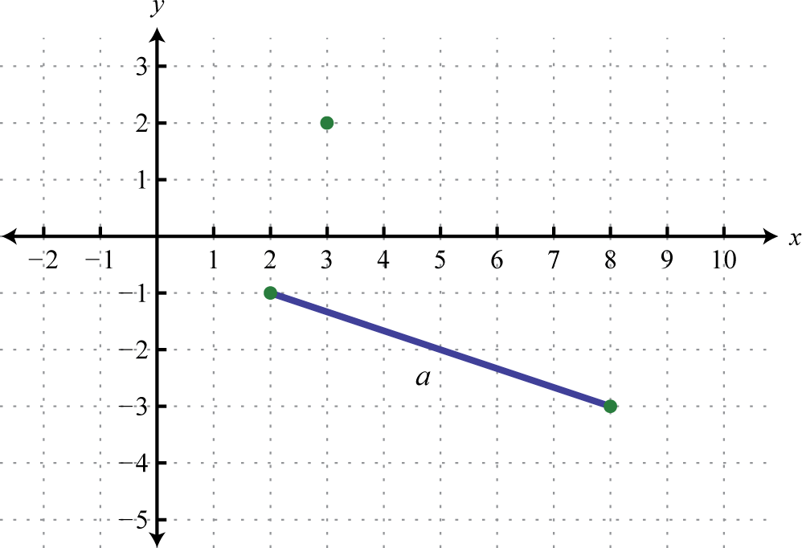
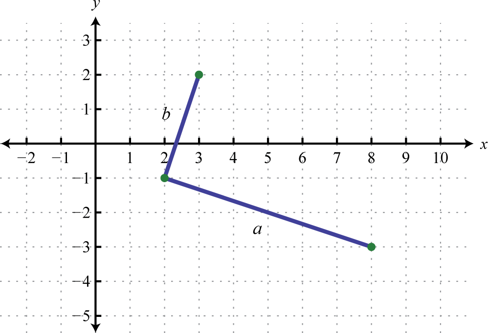
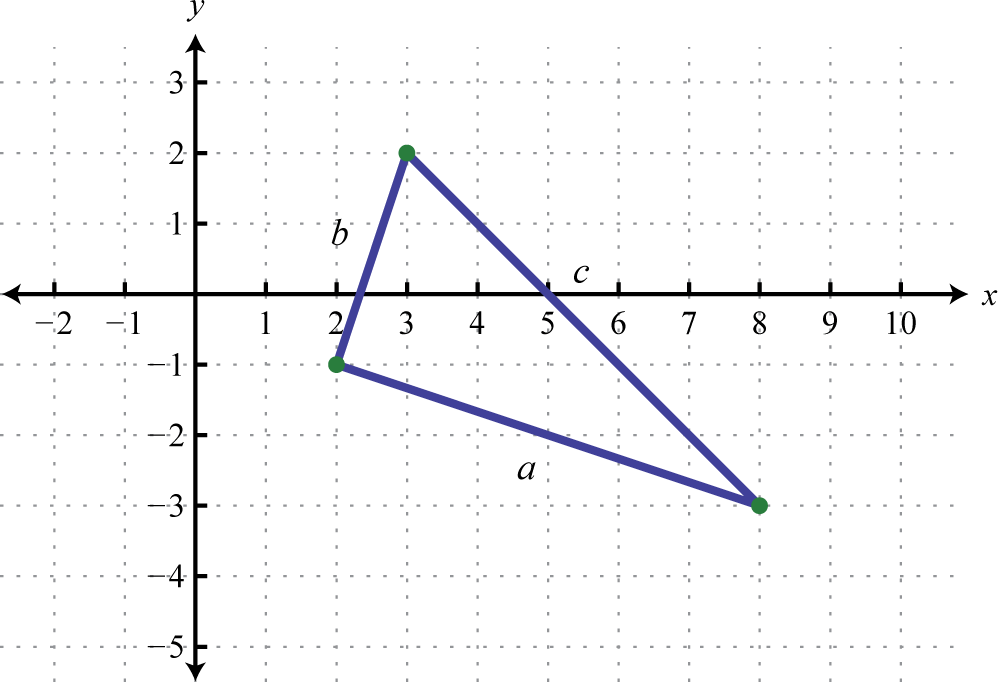

An algebraic expression that contains radicals is called a radical expressionAn algebraic expression that contains radicals.. We use the product and quotient rules to simplify them.
Simplify:
Solution:
Use the fact that when n is odd.
Answer:
Simplify:
Solution:
Use the fact that when n is even.
Since y is a variable, it may represent a negative number. Thus we need to ensure that the result is positive by including the absolute value.
Answer:
Typically, at this point in algebra we note that all variables are assumed to be positive. If this is the case, then y in the previous example is positive and the absolute value operator is not needed. The example can be simplified as follows.
In this section, we will assume that all variables are positive. This allows us to focus on calculating nth roots without the technicalities associated with the principal nth root problem. For this reason, we will use the following property for the rest of the section,
When simplifying radical expressions, look for factors with powers that match the index.
Simplify:
Solution:
Begin by determining the square factors of 12, , and
Make these substitutions, and then apply the product rule for radicals and simplify.
Answer:
Simplify: .
Solution:
Begin by determining the square factors of 18, , and
Make these substitutions, apply the product and quotient rules for radicals, and then simplify.
Answer:
Simplify:
Solution:
Begin by determining the cubic factors of 80, , and
Make these substitutions, and then apply the product rule for radicals and simplify.
Answer:
Simplify .
Solution:
The coefficient , and thus does not have any perfect cube factors. It will be left as the only remaining radicand because all of the other factors are cubes, as illustrated below:
Replace the variables with these equivalents, apply the product and quotient rules for radicals, and then simplify.
Answer:
Simplify:
Solution:
Determine all factors that can be written as perfect powers of 4. Here, it is important to see that Hence the factor will be left inside the radical.
Answer:
Simplify:
Solution:
Notice that the variable factor x cannot be written as a power of 5 and thus will be left inside the radical. In addition, ; the factor y will be left inside the radical as well.
Answer:
Tip: To simplify finding an nth root, divide the powers by the index.
If the index does not divide into the power evenly, then we can use the quotient and remainder to simplify. For example,
The quotient is the exponent of the factor outside of the radical, and the remainder is the exponent of the factor left inside the radical.
Formulas often consist of radical expressions. For example, the period of a pendulum, or the time it takes a pendulum to swing from one side to the other and back, depends on its length according to the following formula.
Here T represents the period in seconds and L represents the length in feet of the pendulum.
If the length of a pendulum measures feet, then calculate the period rounded to the nearest tenth of a second.
Solution:
Substitute for L and then simplify.
Answer: The period is approximately 1.36 seconds.
Frequently you need to calculate the distance between two points in a plane. To do this, form a right triangle using the two points as vertices of the triangle and then apply the Pythagorean theorem. Recall that the Pythagorean theorem states that if given any right triangle with legs measuring a and b units, then the square of the measure of the hypotenuse c is equal to the sum of the squares of the legs: In other words, the hypotenuse of any right triangle is equal to the square root of the sum of the squares of its legs.
Find the distance between (−5, 3) and (1, 1).
Solution:
Form a right triangle by drawing horizontal and vertical lines though the two points. This creates a right triangle as shown below:
The length of leg b is calculated by finding the distance between the x-values of the given points, and the length of leg a is calculated by finding the distance between the given y-values.
Next, use the Pythagorean theorem to find the length of the hypotenuse.
Answer: The distance between the two points is units.
Generalize this process to produce a formula that can be used to algebraically calculate the distance between any two given points.
Given two points, and , the distance, d, between them is given by the distance formulaGiven two points and , calculate the distance d between them using the formula ,
Calculate the distance between (−4, 7) and (2, 1).
Solution:
Use the distance formula with the following points.
It is a good practice to include the formula in its general form before substituting values for the variables; this improves readability and reduces the probability of making errors.
Answer: The distance between the two points is units.
Do the three points (2, −1), (3, 2), and (8, −3) form a right triangle?
Solution:
The Pythagorean theorem states that having side lengths that satisfy the property is a necessary and sufficient condition of right triangles. In other words, if you can show that the sum of the squares of the leg lengths of the triangle is equal to the square of the length of the hypotenuse, then the triangle must be a right triangle. First, calculate the length of each side using the distance formula.
Geometry |
Calculation |
|---|---|
|

|
Points: (2, −1) and (8, −3)
|
|

|
Points: (2, −1) and (3, 2)
|
|

|
Points: (3, 2) and (8, −3)
|
Now we check to see if
Answer: Yes, the three points form a right triangle.
Try this! The speed of a vehicle before the brakes were applied can be estimated by the length of the skid marks left on the road. On wet concrete, the speed v in miles per hour can be estimated by the formula , where d represents the length of the skid marks in feet. Estimate the speed of a vehicle before applying the brakes if the skid marks left behind measure 27 feet. Round to the nearest mile per hour.
Answer: 18 miles per hour
Assume that the variable could represent any real number and then simplify.
Simplify. (Assume all variable expressions represent positive numbers.)
Rewrite the following as a radical expression with coefficient 1.
The period T in seconds of a pendulum is given by the formula where L represents the length in feet of the pendulum. Calculate the period, given each of the following lengths. Give the exact value and the approximate value rounded to the nearest tenth of a second.
8 feet
32 feet
foot
foot
The time t in seconds an object is in free fall is given by the formula where s represents the distance in feet the object has fallen. Calculate the time it takes an object to fall, given each of the following distances. Give the exact value and the approximate value rounded to the nearest tenth of a second.
48 feet
80 feet
192 feet
288 feet
The speed of a vehicle before the brakes were applied can be estimated by the length of the skid marks left on the road. On dry pavement, the speed v in miles per hour can be estimated by the formula , where d represents the length of the skid marks in feet. Estimate the speed of a vehicle before applying the brakes on dry pavement if the skid marks left behind measure 27 feet. Round to the nearest mile per hour.
The radius r of a sphere can be calculated using the formula , where V represents the sphere’s volume. What is the radius of a sphere if the volume is cubic centimeters?
Given the function find the y-intercept
Use the distance formula to calculate the distance between the given two points.
(5, −7) and (3, −8)
(−9, 7) and (−8, 4)
(−3, −4) and (3, −6)
(−5, −2) and (1, −6)
(−1, 1) and (−4, 10)
(8, −3) and (2, −12)
(0, −6) and (−3, 0)
(0, 0) and (8, −4)
and
and
Determine whether or not the three points form a right triangle. Use the Pythagorean theorem to justify your answer.
(2,−1), (−1,2), and (6,3)
(−5,2), (−1, −2), and (−2,5)
(−5,0), (0,3), and (6,−1)
(−4,−1), (−2,5), and (7,2)
(1,−2), (2,3), and (−3,4)
(−2,1), (−1,−1), and (1,3)
(−4,0), (−2,−10), and (3,−9)
(0,0), (2,4), and (−2,6)
Give a value for x such that Explain why it is important to assume that the variables represent nonnegative numbers.
Research and discuss the accomplishments of Christoph Rudolff. What is he credited for?
What is a surd, and where does the word come from?
Research ways in which police investigators can determine the speed of a vehicle after an accident has occurred. Share your findings on the discussion board.
seconds; 3.1 seconds
seconds; 0.8 seconds
seconds; 1.7 seconds
seconds; 3.5 seconds
25 miles per hour
units
units
units
units
units
Right triangle
Not a right triangle
Right triangle
Right triangle
Answer may vary
Answer may vary